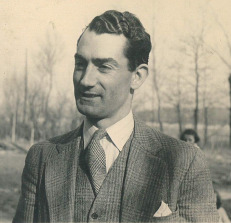

Francis Adolphe Marie Joseph WATTINNE — Né le 18/04/1908 à Lille — Décédé le 21/08/1946 à Bandol
Francis Adolphe Marie Joseph WATTINNE
Né le 18/04/1908 à Lille
Décédé le 21/08/1946 à Bandol
Résumé
Francis François Louis Jules Joseph Wattinne naît en 1908, troisième enfant d'Eugène Joseph Gustave Wattinne et de Madeleine Droulers. Il est le frère d'Agnès Wattinne (1904–1993), épouse de Claude Saint-Léger, et d'Eugène Jean-Marie Wattinne (1903–1985). Il épouse Denise Segard (1909–2005).
Champion de natation, il installe dans sa tour un atelier de menuiserie où il fabrique, selon le souvenir attendri de sa sœur Agnès, « quelques meubles très jolis ». Cette image d'un homme à la fois sportif et artisan, habile de ses mains, contraste avec la mort absurde qui le frappe : en 1944, à 36 ans, alors qu'il nage au large de Bandol, il est terrassé par un malaise cardiaque. Être champion de natation et mourir noyé — l'ironie tragique de cette fin n'a pas échappé à Agnès, qui en parle avec une douceur mêlée d'incrédulité dans ses souvenirs. Il avait 36 ans.
Sources :
- données familiales (gedcom)
- témoignage d'Agnès Wattinne
{kind=link}

{kind=link}
📷 Cliquez pour voir 2 photo(s)
Arbre généalogique
31/10/1875 — 08/12/1927
Madeleine DROULERS
23/01/1883 — 23/02/1974
Liliane WATTINNE
Edith WATTINNE
Muriel WATTINNE